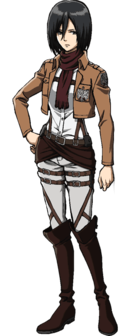

Микаса Аккерман
{kind=link}
Микаса Аккерман — приёмная сестра Эрена Йегера и лучшая подруга Армина Арлерта. Обладает выдающимися физическими способностями.
После убийства её биологических родителей похитителями, она была спасена Эреном и стала жить с ним и его родителями, Гришей и Карлой до падения стены Марии.
Хотя первоначально Микаса и хотела лишь мирно жить с Эреном, она последовала за ним и вступила в 104-ый кадетский корпус, где она стала лучшей из всех выпускников. Позже она вступила в Разведкорпус, чтобы следить за Эреном и защищать его.
Внешность
Микаса — довольно высокая, стройная и физически сильная девушка с чёрными волосами, немного не доходящими до плеч, которые изначально были длиннее, но она подстриглась для удобства в обращении с УПМ. Микаса — азиатка, у неё несколько бледная кожа и серые глаза. Тело Микасы стройное, несмотря на мускулистость. Также, у неё имеется небольшой шрам ниже правого глаза, который она получила когда Эрен во время Битвы за Трост неосознанно попытался убить её в форме титана.
{kind=link}
Микаса носит стандартную форму солдата Разведкорпуса с белой рубашкой. На некоторых миссиях Микаса также носит зелёный плащ с эмблемой Разведкорпуса. Отличительной чертой в одежде Микасы является тёмно-коричневый (красный в аниме) шарф, который ей подарил Эрен после того, как спас её от похитителей. Таким образом, этот шарф очень дорог для неё и она всегда носит его.
По прошествии времени, в 854 году Микаса появляется с более короткими растрёпанными волосами, всё также длинными спереди, но более короткими на затылке. Также она теперь носит новую форму Разведкорпуса, которая имеет отсеки для громовых копий и два баллона с газом. Также теперь в форму входят бронированный нагрудник, высокие чёрные сапоги, дополнительные ремни и крепление вокруг груди для второго баллона со сжатым газом.
Личность
За несколько лет до присоединения к семье Йегер, Микаса была жизнерадостным, общительным и очень проницательным ребёнком. С ранних лет своей жизни она знала о жестокости природы, ведь как-то она сказала, что хищники едят свою добычу. Однако, её жизнерадостность позволила ей отойти от этих мыслей и она продолжала счастливо жить со своими родителями. Этот идеальный мир был разрушен группой похитителей, которые убили её родителей на её глазах. Чтобы спасти себя и своего друга, Эрена Йегера, Микасе пришлось отказаться от своей прошлой личности и убить последнего похитителя. После этих событий Микаса стала цинично смотреть на всё окружающее и считать, что мир жесток и выжить в нём могут лишь сильные люди.
{kind=link}
После смерти родителей Микаса стала более эмоционально отрешённой, но она всё ещё любит своих друзей и заботится о них, особенно об Эрене и Армине, считая их своей семьёй, которую она не может позволить себе потерять. На её личность сильно повлиял Эрен, который сказал ей, что у неё не будет шанса выжить если она не будет бороться за свою жизнь. Эти слова она запомнила навсегда и она вспоминает их, когда находится на пороге смерти. Её потребность защищать Эрена повлияла на её становление как одного из сильнейших воинов человечества.
История
Микаса родилась у представителя семьи Аккерман и азиатки. До их смерти Микаса жила вместе с ними спокойной мирной жизнью в деревянном доме, находящимся глубоко в лесу на территории стены Мария. Однажды мать Микасы вырезала ей небольшой шрам в виде знака Клана Азии на руке. Будучи последними представительницами данного клана, Микаса и её мать представляли большую ценность для похитителей, которые впоследствии убили её родителей и хотели продать её в рабство дворянам в столице. В то время ей было всего лишь 9 лет. Микаса была спасена Эреном, который убил двух похитителей, затем его схватил и попытался задушить третий. Задыхаясь, Эрен пытался докричаться до Микасы, побуждая в ней стремление к сражению во имя победы. И хоть изначально она и испугалась, но вскоре она поняла, что мир жесток и убила похитителя, который пытался задушить Эрена ударом ножа в сердце со спины. Когда отец Эрена прибыл к дому Микасы вместе с солдатами Военной полиции, Эрен подарил ей свой шарф. Этот случай пробудил в Микасе невероятную выдержку и упорство, которые помогли ей стать отличным солдатом. Микаса жила в семье Эрена, в Шиганшине до атаки на этот район Колоссального Титана в 845 году.